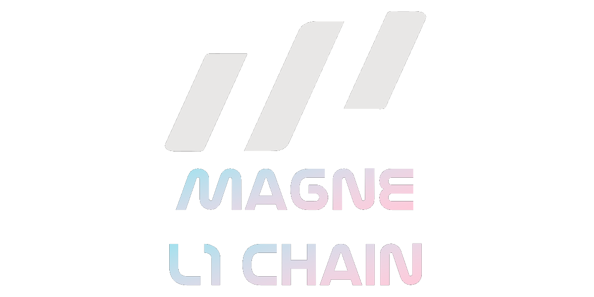
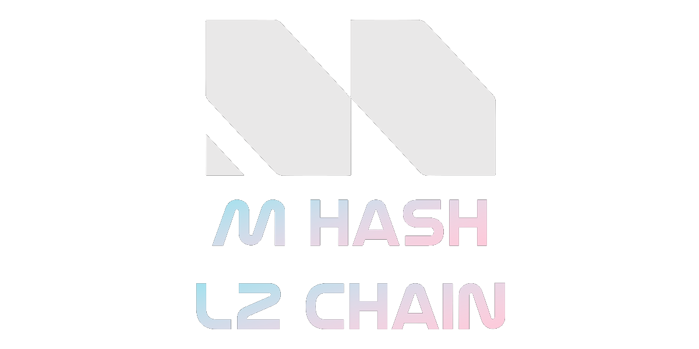
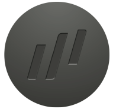

OFFICIAL MEDIA RESOURCES
可以下載。可以引用。但不能失去上下文。
品牌架構 · BRAND ARCHITECTURE
MAGNE 是 L1。
M HASH 是 L2。
兩組識別有不同層級與用途。報導 MAGNE.AI 終端、產品與設備時使用 MAGNE；描述 M HASH 網絡與 L2 基礎設施時使用 M HASH。

識別資產 · LOGO ARCHIVE
所有版本，
先預覽再下載。
PRIMARY LOCKUP / 2 FILES
左側為三斜線品牌標誌，右側為 MAGNE.AI 字標。這是完整橫版組合，分別供淺色與深色背景使用。
PRIMARY / BLACK完整橫版黑色 LogoPNG · 1181 × 116下載 PNG ↓
PRIMARY / WHITE完整橫版白色 LogoPNG · 1210 × 116下載 PNG ↓
PNG / 6 FILES
舊站官方 PNG 版本完整保留。預覽畫布會依資產顏色切換明暗背景。
PNG 01標誌版本 01799 × 769 · 54 KB下載 PNG ↓
PNG 02標誌版本 02800 × 769 · 52 KB下載 PNG ↓
PNG 03標誌版本 03877 × 769 · 14 KB下載 PNG ↓
PNG 04黑色橫版3962 × 768 · 48 KB下載 PNG ↓
PNG 06白色橫版3962 × 769 · 48 KB下載 PNG ↓
PNG 28標誌版本 28877 × 769 · 13 KB下載 PNG ↓
SVG / 7 FILES
SVG 以原始向量檔直接渲染，不轉成縮圖，因此預覽就是瀏覽器實際解析結果。
SVG 08向量標誌 08ViewBox 210 × 184下載 SVG ↓

SVG 09向量標誌 09ViewBox 192 × 184下載 SVG ↓
SVG 10向量標誌 10ViewBox 192 × 184下載 SVG ↓
SVG 11向量標誌 11ViewBox 192 × 184下載 SVG ↓
SVG 18向量橫版 18ViewBox 951 × 184下載 SVG ↓
SVG 21向量標誌 21ViewBox 210 × 184下載 SVG ↓
SVG 26向量橫版 26ViewBox 951 × 184下載 SVG ↓
BRAND GUIDE / 3 FILES
官方色彩、Logo 概念與品牌識別頁，屬於識別系統的使用參考。


產品與包裝 · PRODUCT PRESS
每一份產品資產，
都能先看清楚。
PRODUCT / 3 FILES
高解析度產品渲染與完整包裝配置。

MAG1 / WHITE月光銀機型PNG · 2314 × 1724下載原圖 ↓

MAG1 / BLACK黑曜黑機型PNG · 2314 × 1724下載原圖 ↓

PACKAGE包裝與完整配件PNG · 2022 × 3240下載原圖 ↓
PACKAGING / 5 FILES
四張包裝設計頁，以及 NFC 卡原圖。


{kind=link}
{kind=link}
{kind=link}
{kind=link}
{kind=link}
{kind=link}
{kind=link}
{kind=link}
{kind=link}
{kind=link}
{kind=link}
{kind=link}
{kind=link}
{kind=link}
{kind=link}
{kind=link}
{kind=link}
{kind=link}
{kind=link}
{kind=link}
{kind=link}
{kind=link}
{kind=link}
{kind=link}
{kind=link}
{kind=link}
{kind=link}
{kind=link}
{kind=link}
{kind=link}
{kind=link}
媒體聯絡 · PRESS DESK
需要採訪、原始檔，
或產品背景資料？
請說明媒體名稱、用途、預計發布日期與需要的素材格式。我們會把請求送到正確的窗口。
official@magne.ai ↗品牌資產僅供新聞、評論、合作與經授權的編輯用途。不得改變比例、重繪標誌、替換品牌色，或使素材暗示未經確認的背書與合作關係。